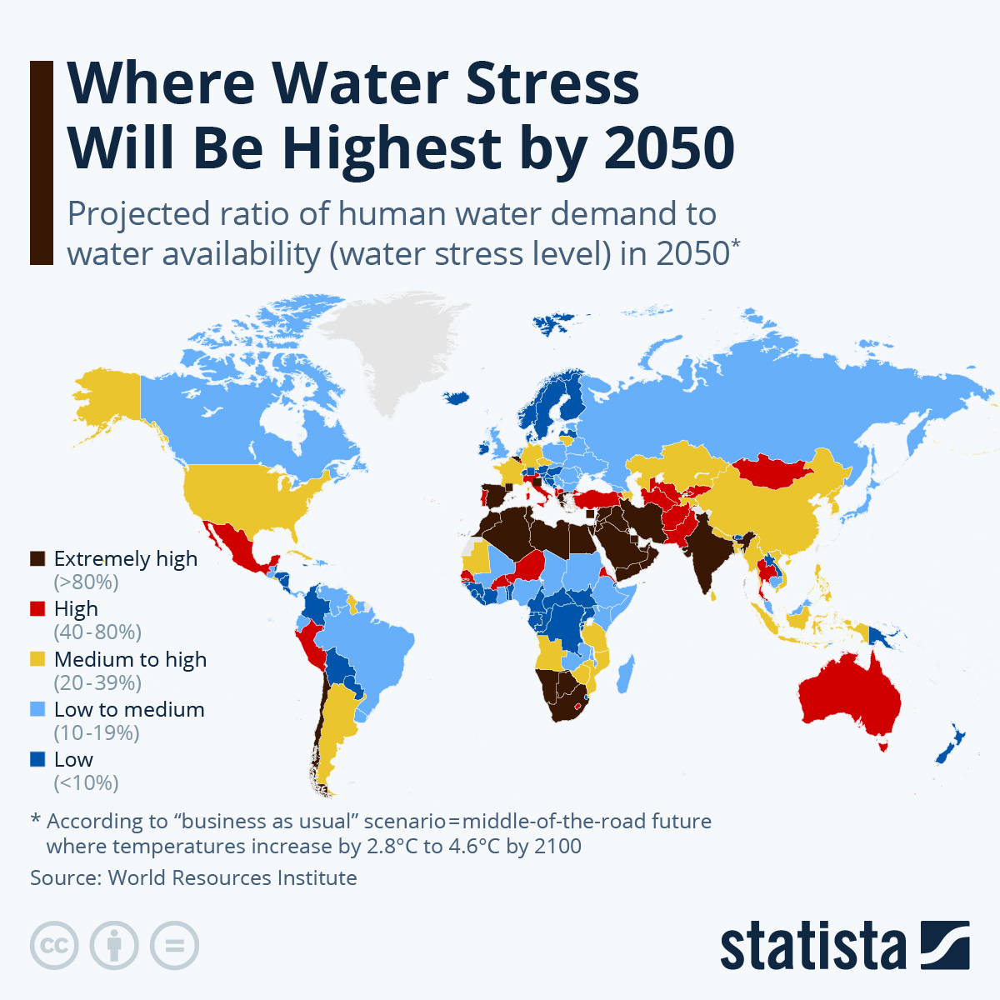

SUCCESS
HOW ONE CAN HELP?
The water crisis is a complex issue, but there are definitely ways you can help! Here are some actions you can take at home and in your community!
Reduce your water usage
: This is a big one! Simple things can make a real difference.
Get involved in local water conservation efforts
programs or initiatives aimed at conserving water.
Spread awareness
Talk to your friends and family about the importance of conserving water. The more people who are aware of the issue.
Protecting natural resources
Wetlands and forests play a vital role in filtering and storing water.
BELIEVING
Focusing On What Matters Most
Access to Clean Water: Ensuring that everyone has access to safe and clean drinking water is paramount. This involves improving infrastructure for water supply, sanitation, and hygiene (WASH), especially in underserved communities.
Water Quality: Beyond mere access, the quality of water is essential. Contaminated water can lead to various health issues, so measures to improve water quality through purification and sanitation are vital.
Sustainable Water Management: Adopting sustainable practices in water management is crucial for long-term viability. This includes efficient use of water resources, preventing over-extraction of groundwater, and protecting ecosystems that provide water services.
Watch Now
RealTime View
Let Us see the Future we'll build
TRUST
SUSTAINABLE DEVELOPMENT GOALS
water is interconnected with various aspects of sustainable development, including health, environment, economy, and social equity. Achieving water-related SDGs requires collaborative efforts, innovative solutions, and integrated approaches that prioritize sustainability, equity, and resilience.